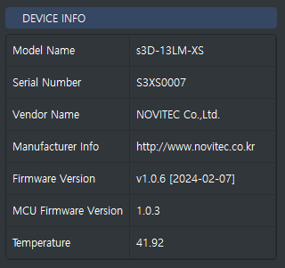
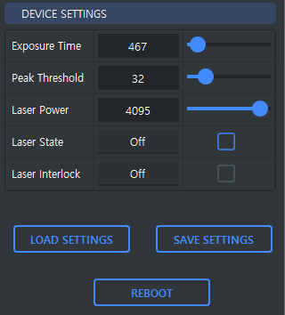
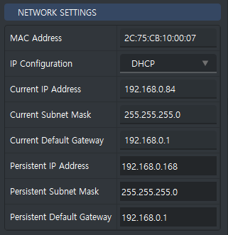
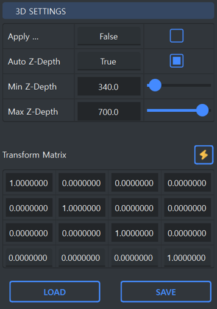

Device Info
The Device Info ToolBox allows you to access information about the currently connected swing3D.
The Device Info ToolBox provides the following information:
Property |
Description |
|---|---|
Model Name |
The model name of the device. |
Serial Number |
The serial number of the device. |
Vendor Name |
The vendor name of the device. |
Manufacturer Info |
The manufacturer information of the device. |
Firmware Version |
The firmware version of the device. |
MCU Firmware Version |
The MCU firmware version of the device. |
Temperature |
The temperature of the device. |
Device Settings
The Device Settings ToolBox allows you to control the settings of the currently connected swing3D.
The Device Settings ToolBox provides access to the following features:
Property |
Description |
|---|---|
Exposure Time |
The exposure time setting of the device. |
Peak Threshold |
The peak threshold setting of the device. |
Laser Power |
The laser power setting of the device. |
Laser State |
The laser state (On/Off) setting of the device. |
Laser Interlock |
The laser interlock (On/Off) state setting of the device. |
Load Settings |
Saves the current device settings based on its output mode. |
Save Settings |
Loads the saved device settings based on its output mode. |
Reboot |
Reboots the device. |
Tip
The Exposure Time affects laser detection, with increased exposure resulting in slower scanning speeds.
Tip
The Peak Threshold determines the laser brightness detection threshold in the device.
Network Settings
The Network Settings ToolBox allows you to manage the network configuration of the currently connected swing3D.
The Network Settings ToolBox provides access to the following network features:
Property |
Description |
|---|---|
MAC Address |
The MAC address of the device. |
IP Configuration |
The current IP configuration (DHCP/Static) of the device. |
Current IP Address |
The current IP address of the device. |
Current Subnet Mask |
The current subnet mask of the device. |
Current Default Gateway |
The current default gateway of the device. |
Persistent IP Address |
The persistent IP address of the device. |
Persistent Subnet Mask |
The persistent subnet mask of the device. |
Persistent Default Gateway |
The persistent default gateway of the device. |
Tip
Changes to the Network Settings require a reboot of the device to become effective.
3D Settings
The 3D Settings Toolbox lets you adjust various settings related to 3D in Studio.
Access the following features in the 3D Settings Toolbox:
Property |
Description |
|---|---|
Apply Transform |
Determines whether to apply a transform when calling Capture3D from swing3D. (True/False) |
Auto Z-Depth |
Automatically calculates and applies the minimum/maximum Z-Depth from scanned point clouds. (True/False) |
Min Z-Depth |
Sets a minimum Z-Depth for the point cloud. Deletes points below this threshold. Active when Auto Z-Depth is False. |
Max Z-Depth |
Establishes a maximum Z-Depth for the point cloud. Deletes points above this threshold. Active when Auto Z-Depth is False. |
Transform Matrix
Allows you to set and save a custom 4x4 transformation matrix for aligning the 3D point cloud data. This matrix is used to adjust the orientation and position of the point cloud to fit specific requirements or align with a reference plane.
LOAD: Loads the transformation matrix stored on the device.
SAVE: Saves the transformation matrix settings to the device for future use. After saving, you may need to reset the Output Mode to apply the changes.
Quick Input: The thunder icon button next to the Transform Matrix label opens a dialog where you can quickly enter the 4x4 matrix values. This dialog allows for easier input and editing of the matrix values, making it more convenient to make adjustments or enter custom values.
Tip
The transformation matrix can be used to precisely align the point cloud with the Z-axis or other desired orientations by defining specific rotation, scaling, or translation parameters.